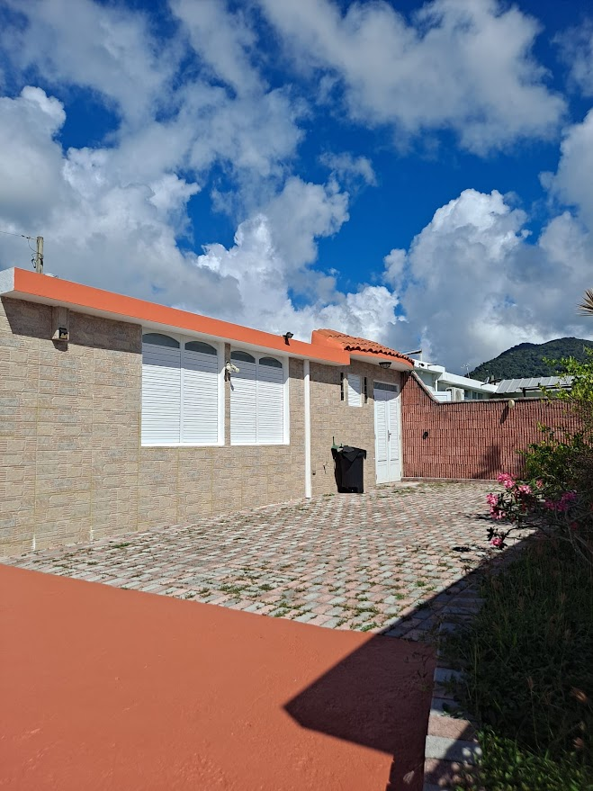

Ready?
Bring your team
to la isla
From $172/night base · 3 bedrooms · Group rates available
Email Kimlee for a quote ↗A private 3-bedroom villa on Puerto Rico's quietest coast, built for small-team offsites that need focus, fast WiFi, and a beach five minutes downhill.
The mainland conference room is a bad place to do new thinking. So is a hotel ballroom. The two best things you can give a team is a change of scenery and uninterrupted hours together — both are hard to get without leaving the country, except in Puerto Rico.
Casa Chunan is a luxury 3-bedroom villa in Maunabo, on the southeast coast of Puerto Rico. We host executive retreats, founder offsites, leadership planning weeks, and small remote-team gatherings. No resort distractions, no airline connection through Miami, and US cell service the moment you land.

The shortlist of reasons most groups choose Puerto Rico over alternatives:
Beyond the practical: Puerto Rico has a real food culture, a real coastline, and a slow rhythm that pulls a team out of inbox mode without requiring a full week.
Casa Chunan is in Maunabo on the southeast coast — about 90 minutes from San Juan International. It is an intentional choice. The team that needs to think carefully needs distance from the cruise ports, the casino strip, and the bachelorette weekends in Old San Juan.
What you get instead: a small coastal town, a 5-minute drive to Playa Los Bohíos, a 10-minute drive to the historic Punta Tuna Lighthouse, and the kind of evening quiet where the loudest sound is coqui frogs. The work part of the retreat happens at the villa. The decompression happens by walking out the front door.
| Capability | Detail |
|---|---|
| Sleeping capacity | 3 private bedrooms, sleeps up to 6 overnight |
| Working capacity | Open-plan living/dining seats 8-10 around a primary table |
| Breakout zones | Covered terrace, poolside lounge, dining area as separate breakout pods |
| Internet | WiFi available; confirm specific speed needs with the host for work-heavy stays |
| Kitchen | Full kitchen for self-catering, catered meals, or chef-at-the-villa setups |
| Outdoor | Private pool, terrace seating, gardens |
| Parking | Free on-site for multiple vehicles |
| Workspace tools | Bring or rent locally; ask the host about current options |
| Quiet calls | Each bedroom is private and acoustically separated for 1:1s |
For any specific operational needs (AV, projector, sound, business-grade internet redundancy, ground transport for a group of 6+), confirm with Kimlee directly before booking. The villa is a luxury home, not a conference center — it works exceptionally well for small offsites with a flexible team, and less well for highly equipment-dependent sessions.
This is the rhythm most groups settle into on a Wednesday-through-Saturday retreat. Adjust to your operating tempo.
The base lodging rate is $172/night. For retreat bookings of 4+ nights, custom group pricing applies — email Kimlee directly for a quote. Below is what most teams budget for a 4-day, 6-person retreat.
| Line item | Estimate (6 people, 4 days) |
|---|---|
| Lodging (Casa Chunan, 4 nights) | $688 base, group rate negotiated |
| Round-trip ground transport (van SJU pickup + return) | $600 - $900 |
| Catered meals + groceries (4 days) | $1,400 - $2,200 |
| One paid group activity | $400 - $700 |
| Flights (varies wildly by origin) | $1,800 - $3,000 for 6 |
| Total all-in | $4,888 - $7,488 |
For comparison: a 4-day offsite at a mainland conference hotel for 6 typically runs $7,500 to $14,000 once you add room blocks, conference room rentals, F&B minimums, and AV. Puerto Rico's math works because the venue (the villa), the meeting space (the open plan), and the catered meals all collapse into one rented space.
A retreat is mostly people in a room together for hours. Casa Chunan is built around that — with a beach five minutes away when the room is done with you.The villa has hosted founder retreats, executive planning weeks, two-day sales offsites, remote-team in-person gatherings, and book club annual meetings. Most groups stay 3-5 nights. The shortest meaningful retreat we have hosted was 2 nights / 3 days; the longest was 7 nights / a full company workation.
Common requests we have handled: catered breakfasts, private chef dinners, late-checkout meeting use, ground transport coordination, sound equipment rentals, and one-day side trips to El Yunque and Old San Juan.
For more practical detail on getting your team to Maunabo, see:
Email Kimlee with your group size, target dates, and goals — she will reply within 24 hours with availability and a custom group quote.
Email Kimlee about a retreatThe villa sleeps up to 6 guests overnight in 3 private bedrooms. For day-use sessions and meals, the open-plan living and dining areas comfortably seat 8 to 10 around a single table. For larger groups, ask the host about nearby lodging options that can extend overall capacity.
WiFi is available at the villa, and most US cell carriers maintain native US coverage on the island (no roaming fees). For work-heavy retreats with heavy video calls or screen sharing, confirm specific speed requirements with the host before booking.
Kimlee, the host, can point you toward local caterers, private chefs, and roadside food vendors in Maunabo and the southeast coast. Catering and meal coordination details are arranged directly with vendors — ask the host for current recommendations.
About 90 minutes by car (75 km / 47 miles). Ground transportation for groups is not provided directly by Casa Chunan, but many groups arrange a private van or shared rentals in advance.
Yes. The open-plan living-dining area handles a primary session of 8 to 10. Breakouts can use the covered terrace, the poolside lounge, and the dining area separately. Specific meeting equipment (whiteboards, projectors, AV) should be confirmed with the host or arranged independently.
The base rate is $172/night, with custom group pricing available for retreat bookings of 4+ nights — email Kimlee for a quote. A typical 4-day team retreat for 6 people works out to roughly $4,800 to $7,500 all-in once flights, ground transport, meals, and one activity are added; verify with current quotes.